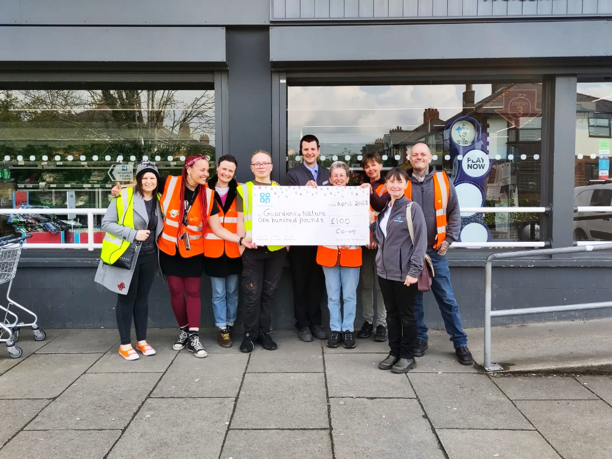

Get involved
Come grow with us.
You don't need experience — just curiosity and a pair of wellies. All our Guardians started as volunteers, and there's no pressure to do more than you'd like.
Get involved
You don't need experience — just curiosity and a pair of wellies. All our Guardians started as volunteers, and there's no pressure to do more than you'd like.


Your journey

Support our work
We're a not-for-profit community interest company, and donations help us keep our spaces thriving, our tools sharp and our doors open to everyone.
You can also share us with others who'd like to help.